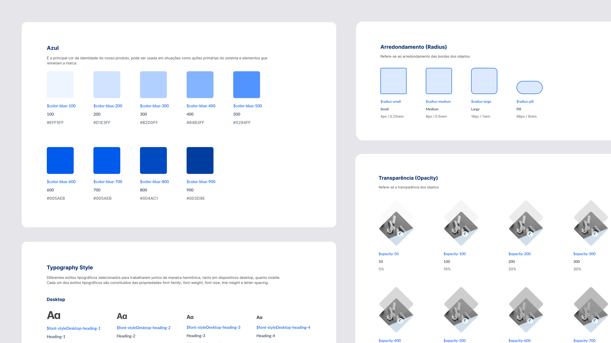
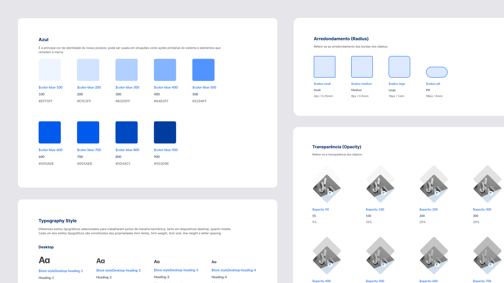
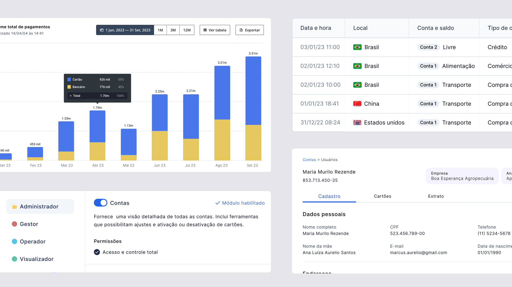
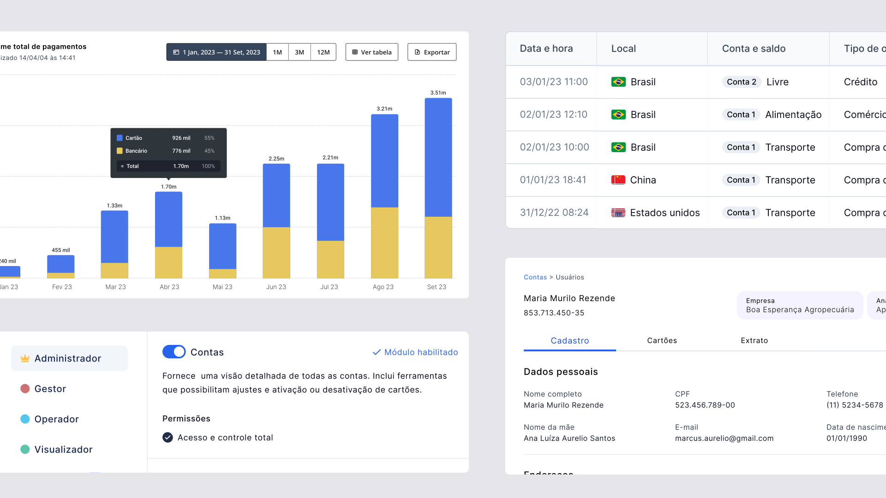

Renan Oliveira
UX Design Specialist
13 anos alcançando resultados para empresas de alta relevância no mercado como _
Vasta experiência liderando equipes de design e contribuindo para projetos na América Latina

13 anos alcançando resultados para empresas de alta relevância no mercado como _
Vasta experiência liderando equipes de design e contribuindo para projetos na América Latina
Atuação como líder hands-on dos times de abertura e onboarding de clientes, trabalhando junto a um time de 30 designers multidisciplinares, ao longo de 2 anos.
Contabilidade online
SaaS por assinatura

 

Atuação como especialista com o objetivo de desenvolver a área de design e aumentar o product market fit de produtos white label dentro de um período de 2 anos.
Fintech
B2B Banking as a Service

 

Atuei como product designer com o objetivo de uma criar uma nova experiência de serviço de orçamentos condominiais com foco em ampliação nas linhas de receita.
Gig Economy (Serviços)
SaaS Freemium + Assinatura